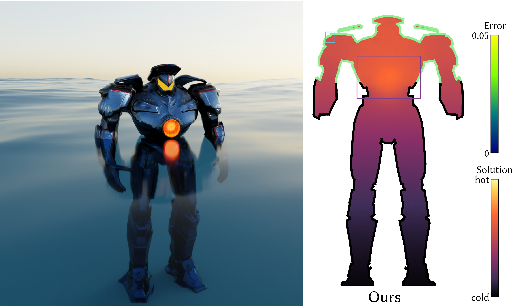
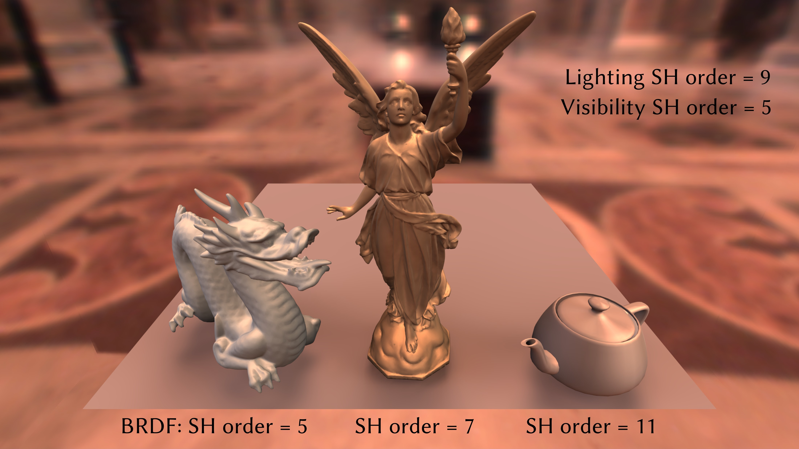
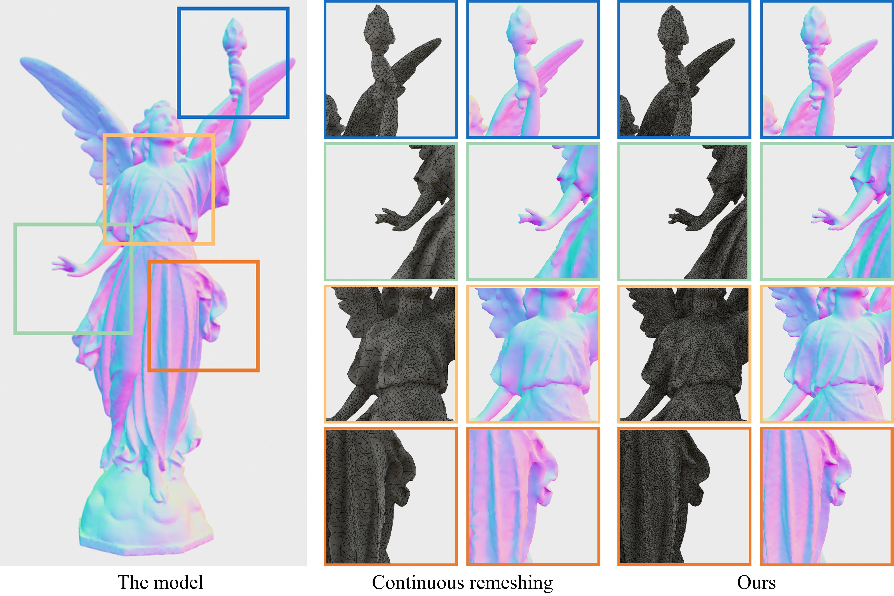

Gradient Domain Reconstruction for Monte Carlo PDE Solvers
ACM Transactions on Graphics (SIGGRAPH 2026)
SIGGRAPH 2026 Technical Papers Honorable Mention Award
Academic Homepage
Senior Undergraduate, Department of Computer Science and Technology, Tsinghua University
I am an undergraduate student in the Department of Computer Science and Technology at Tsinghua University. I will join Prof. Kun Xu's group as a PhD student. My research interests include Computer Graphics and Computer Vision, with a particular focus on Monte Carlo PDE solvers.
* indicates equal contribution.

ACM Transactions on Graphics (SIGGRAPH 2026)
SIGGRAPH 2026 Technical Papers Honorable Mention Award


Research Intern, Huawei, focus on sparse volumetric voxel rasterization and 3D Gaussian Splatting.
Research Intern, Tencent IEG, focus on inverse rendering.
First Prize, The 5th Jittor AI Algorithm Challenge, Human Skeleton Generation Track.
Highest-level funding, Beijing Natural Science Foundation Undergraduate Research Program.
Third Prize, Information Technology Track, 43rd Tsinghua Challenge Cup.
National Scholarship.
Tang Zhongying Moral Education Scholarship.
Tsinghua University Comprehensive Scholarship: Friends of Tsinghua – PetroChina Scholarship.